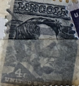
| SOURCE | TITLE| IMAGE MATCH | click to source page |
| WRIC ABC 8News | An up-close look at the Robert E. Lee 'time capsule' cornerstone box: New artifacts found inside | WRIC ABC 8News | 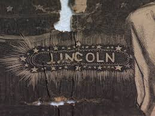 |
| APIC.us | Are These Ribbons Real or Are They Memorex? | 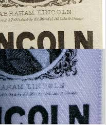 |
| eBay | Souvenir 20 Views Lincolns Home and Tomb Springfield Illinois one of a kind | eBay | 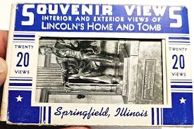 |
| New Jersey Hills Media Group | Local painter Santo Romano displays works about 9/11 at Florham Park library | News | newjerseyhills.com | 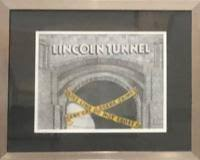 |
| Alamy | Concealed cash hi-res stock photography and images - Alamy | 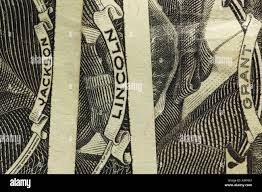 |
| The Historical Marker Database | Lincoln's Friends and Foes Historical Marker | 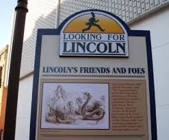 |
| The Historical Marker Database | Lincoln's Lincoln Historical Marker | 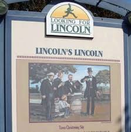 |
| Flickr | Lincoln Loved Animals | ethel the chicken | Flickr | 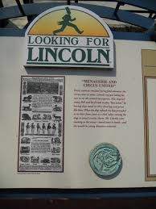 |
| UK Kebab Frome | Rare Us Paper Money Vietnam War Commemorative $2 Bill - Genuine Uncirculated US Legal Tender Banknote (Random Year) Uncirculated Us $2 Bill | 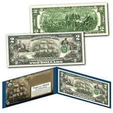 |
| eBay | VINTAGE LINCOLN'S NEW SALEM RUTLEDGE TAVERN ILLINOIS FELT PENNANT 26" {F1323} | eBay | 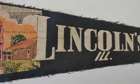 |
| Alamy | Lincolns assassination hi-res stock photography and images - Alamy | 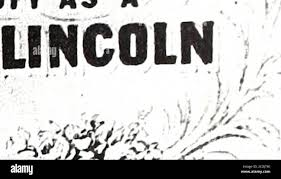 |
| Mindtrip | Tyson's Diner in Beardstown, Illinois | Is it Good? | 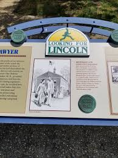 |
| America's National Parks | Lincoln Boyhood National Memorial — America's National Parks | 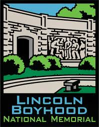 |
| Antique 1889 -This is an antique leather-bound edition of a “History of the United States” book, likely from the late 19th century and possibly authored by John Clark Ridpath. The book covers | 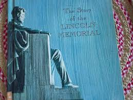 | |
| eBay | Uncertified 2 1976 $ US Small Size Paper Money Notes for sale | eBay | 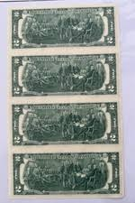 |
| The Historical Marker Database | The Last Stop Historical Marker | 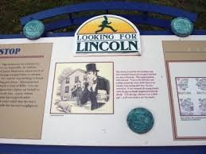 |
| Etsy | Vintage Illinois Souvenir State Plate Landmarks Decorative Collector Travel Vacation Retro Wall Decor Gift Collectible Green Transferware - Etsy | 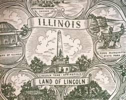 |
| MapQuest | Vermilion County Museum, 116 N Gilbert St, Danville, IL 61832, US - MapQuest | 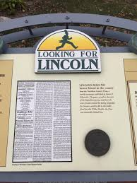 |
| MutualArt | Max Rosenthal | Etching of Lincoln | MutualArt | 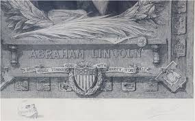 |
| Mercari | Highland Mint Commemorative Limited Edition | Mercari | 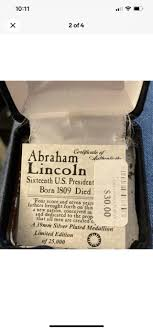 |
| Ancestry.com | Abraham Lincoln Junior High School Yearbooks and Pictures - Ancestry® | 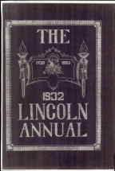 |
| The Lincoln Financial Foundation Collection | Honest Abe | The Lincoln Financial Foundation Collection | 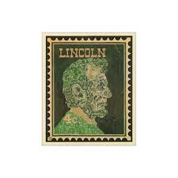 |
| Classmates.com | 1955 yearbook from Hurley High School from Hurley, Wisconsin | 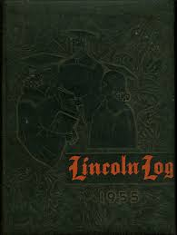 |
| MyConfinedSpace | US Army Green Beret in Mexico City [1117×749] - MyConfinedSpace | 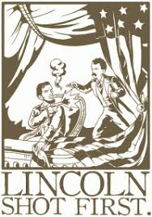 |
| E-Yearbook.com | Lincoln High School - Lincolnia Yearbook (Cleveland, OH), Covers 16 - 30 | 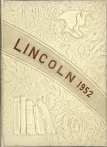 |
| eBay | Disney Haunted Mansion Collectable Trading Cards for sale | eBay | 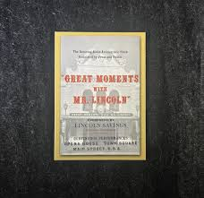 |
| National Park Service History Electronic Library & Archive | Park Archives: Lincoln Boyhood National Memorial (Brochures/Site Bulletins/Trading Cards) | 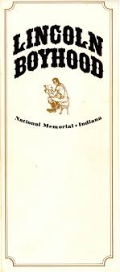 |
| E-Yearbook.com | Hurley High School - Log Yearbook (Hurley, WI), Class of 1954, Cover | 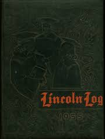 |
| City of Dallas City, Illinois | Photos - Dallas City, Illinois | 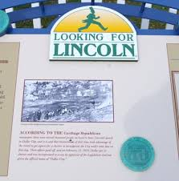 |
| eBay | Rare Vintage Abraham Lincoln Mint State US Postage Stamp Collection Display EXC | eBay | 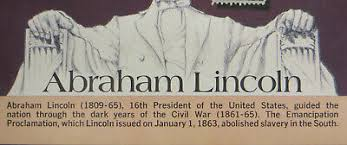 |
| OfferUp | Abraham Lincoln pencil etch by Franklin E. Stone for Sale in Orchard Grass, KY - OfferUp | 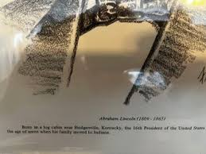 |
| eBay | The Lincoln Conspiracy: A Murder Mystery Party Game Indiana Historical Society | eBay | 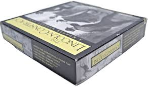 |
| Tripadvisor | Vermilion County Museum (2026) - All You MUST Know Before You Go (with Reviews) | 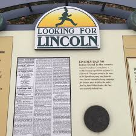 |
| نتطلع إلى قرن جديد برفقتكم، ولطالما كرسنا جهودنا في لينكون لتصنيع السيارات التي تثير التشويق لدى الإنسان. بمناسبة الذكرى المئة لتأسيس عالم لينكون سنستمر في إنشاء تجارب مبهجة لسائقينا وركابنا، بغض النظر | 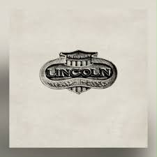 | |
| Blogger.com | Review - "Lincoln's Mercenaries: Economic Motivation Among Union Soldiers During the Civil War" by William Marvel | Civil War Books and Authors | 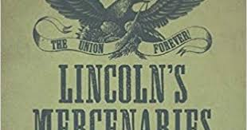 |
| Last ride on a funeral train in 1885 | 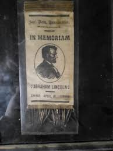 | |
| Clube Desportivo A dos Cunhados | 1914 Series $100 Ben Franklin Federal Reserve Note designed on a Modern $2 Bill - Clube Desportivo A dos Cunhados | 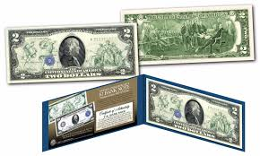 |
| Illinois.gov | Library Collections | Abraham Lincoln Presidential Library and Museum | |
| The Historical Marker Database | Lincoln Wins His Case Historical Marker | 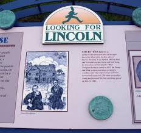 |
| eBay | Original Gum United States 42 Cent Denomination Stamps for sale | eBay | 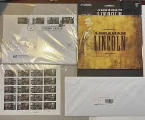 |
| Library of Congress (.gov) | Circa-1940s vintage welcome mural in Lincoln, an Illinois town of 15,000 people that attracts visitors for reasons: It is the only town in the United States that was named for Abraham Lincoln | 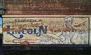 |
| The Historical Marker Database | Lincoln Speaks at Church Historical Marker | 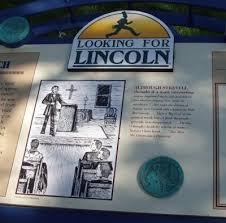 |
| Invaluable.com | Sold at Auction: Abraham Lincoln 16th U.S. Presidet Calling Card | 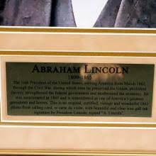 |
| railsplitter.com | Marketplace 2015 - The Rail Splitter | 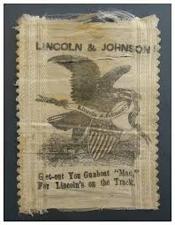 |
| APIC.us | V for Victory - VV Victory at Home and Abroad | 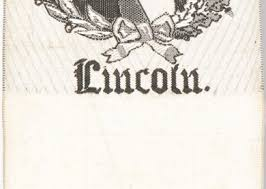 |
| Etsy | 1878 Map of Lincoln County Wisconsin - Etsy | 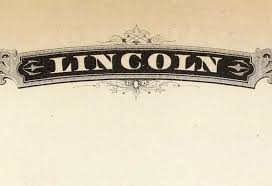 |
| WorthPoint | NEW* Matte Proof Lincoln Cents, 1909-1917 | #159006877 | 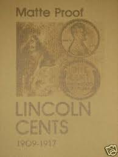 |
| Biblioguides | Abraham Lincoln - Biblioguides | 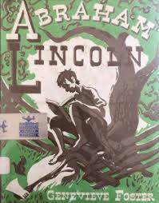 |
| YUMPU | Guelzo Frontmatter.indd | 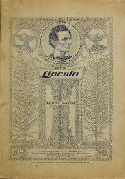 |
| Sage Parnassus | George Washington's Slow and Beautiful Work • Sage Parnassus | 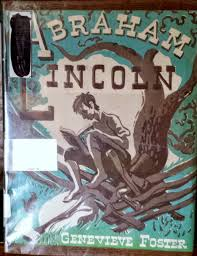 |
| THIRTEEN - New York Public Media | Freedom: A History of US. Tools & Activities. Games | PBS | |
| Lincoln Federal Savings Bank | 10013-PRIVACY POLICY (9472) -- Page 1 of 2 | |
| eBay | Abraham Lincoln Politicians Postal Stamps for sale | eBay | |
| Gebhardt Farms | Find Us — Gebhardt Farms | |
| carehomechemist.co.uk | Eagle Dollar Bill 1899 "Black Eagle" Two Presidents $1 Silver Certificate - New Modern Reproduction Bill Silver Cirtificate | |
| AbeBooks | The Lincoln Memorial Collection. Relics of the War of the Rebellion. Autographs of Soldiers and Sailors and Government Officials by Francis, Julius E.: Very good Wraps (1887) First Edition. | Americana Books, ABAA | |
| E-Yearbook.com | Lincoln Community High School - Memorial Yearbook (Stanwood, IA), Class of 1971, Page 93 of 104 | |
| cloud9-jp.net | 50 Year Penny Set American Coin Treasures Lincoln Memorial Penny Collection 1959-2008 - Complete 50 Year Set Lincoln Cent Set | |
| If you are looking for Lincoln, you can find him here! We have the new - "hot off the press" - 2025 Looking For Lincoln visitors guide filled with information about Lincoln |